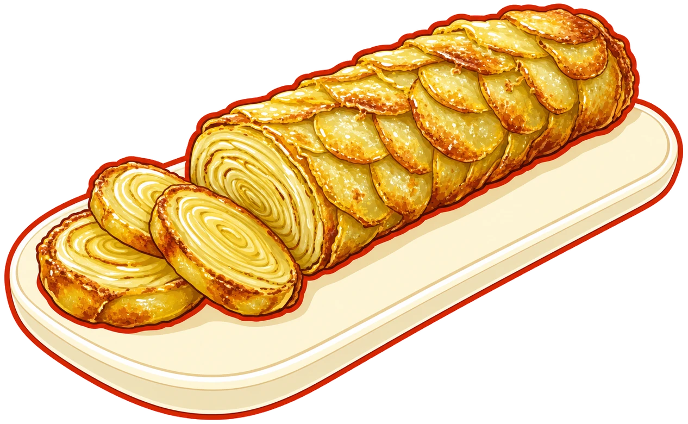

1 kgMängder från receptetefter smakIngen mängd i receptet
Så gör du
190 °C varmluftca 20 minGrill · några min vid behov
1 · Förbered
- Sätt ugnen på 190 °C varmluft.
- Skiva potatisen riktigt tunt, 2–3 mm. Använd mandolin om du har en, annars en vass kniv.
- Vänd skivorna i en skål med olivolja, salt och peppar så att varje skiva får en tunn hinna olja.
- Riv parmesanen fint.
2 · Lägg ut
- Lägg bakplåtspapper på två plåtar och pensla papperet med lite olivolja. Strö parmesanen i ett tunt, jämnt lager på båda.
- Lägg potatisskivorna taklagt ovanpå parmesanen så att de bildar en sammanhängande yta. Det är överlappet som håller ihop rullen.
3 · Baka och rulla
- Baka ca 20 minuter tills potatisen är mjuk och kanterna börjar bli gyllene. Byt plats på plåtarna halvvägs.
- Rulla medan det är varmt. Lyft papperet från ena kortsidan och vik potatisen in över sig själv till en lång rulle. Papperet ska hela tiden vara på utsidan. Gör likadant med andra plåten.
- Servera rullarna hela och skär skivor vid bordet.
Tips
MandolinÖverlappGrillen
Är rullen inte gyllene nog, ge den några minuter under grillen. Håll koll, det går fort.
Rester håller i kylen. Värm i ugnen inlindad i folie, ta av folien på slutet och kör en kort sväng under grillen så att ytan blir krispig igen.
Om receptet
Källa: Salatboden (Dominique Kørvell), ”Sprød kartoffelrulle med parmesan”. Mängder, temperatur och tider kommer från receptet, översatt till svenska. Salt och peppar anges utan mängd. De danska namnen under korten är originalets. Illustrationerna är tecknade med gpt-image, rullen efter receptets foto.